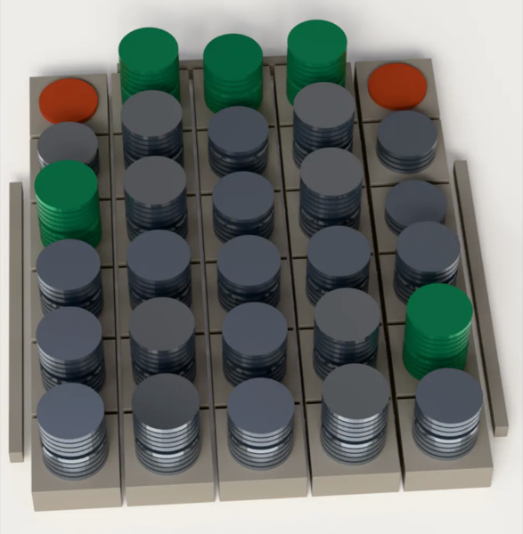

| 55,9 | ||
| 69,0 | ||
| 78,8 | ||
| 79,3 | ||
| 91,5 | ||
| 92,7 | ||
| 85,0supposé |
| Routage publié | 92 / 120 | 190,66 $ |
|---|---|---|
| Routage visé sur le dossier | 95 / 120 | 54,31 $ |
| Écart mesuré | +3 · −0 | ÷ 3,5 |
Trois dossiers complétés de plus, aucun cassé, pour trois fois et demie moins cher. Un seul champ change de lecteur.
Sur vos enregistrements, sur votre machine. Si rien ne bat votre routage, le relevé le dit.